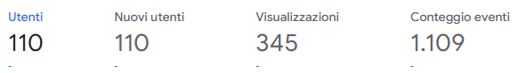
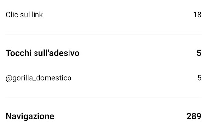

home >
documentazione >
Ho creato il sito “Gorilla Domestico” con l'obiettivo di promuovere e far conoscere, tra i giovani che apprezzano l'indie, questo artista emergente e le sue canzoni, tramite: un breve accenno alla sua vita; le sue canzoni con i relativi testi; una galleria di immagini mentre canta e non; e infine con una pagina dedicata alle curiosità che ha rilasciato in esclusiva per questo sito.
Il progetto si impegna a far conoscere non solo le canzoni, ma anche il cantautore in sé, perché molto spesso solo quando associamo l'autore alle sue opere che possiamo effettivamente comprendere la sua arte
Il Target: ragazzi tra i 20 e i 35 anni
Il primo competitors di questo sito è SoundCloud, dove lo stesso artista ha un account in cui ha pubblicato le sue canzoni. Il secondo invece è Spotify.


Per quanto riguarda le scelte grafiche ho deciso di mettere come sfondo nella
home un'immagine dell'artista, perché scrollando il testo rivela il suo occhiolino,
simbolo che lo caratterizza e che ripropone in moltissime sue foto.
Per i colori invece ho usato: il verde: #144722, l'arancione: #CC5C20,
l'antiquewhite e il nero; cercando di usarli in modi differenti all'interno
delle pagine, ma allo stesso tempo di preservare una certa coerenza tra queste.
Le font utilizzate sono: per il logo 29LT Zarid Stencil SemiB e Montserrat regular
e bold per i testi per rendere i titoli e i paragrafi coerenti, puliti e lineari.
I linguaggi web utilizzati sono: HTML, CSS e JavaScript
Strumenti tecnologici utilizzati: Canva per il logo e il favicon; github per la pubblicazione; codepen.io, html.io, freecodecamp.org per spunti grafici; fontawesome per le icone, google font per i font, color.adobe.com per la scelta dei colori; uizard.io per disegnare il wireframe
Rispetto ai competitors sopra elencati ho cercato di valorizzare tramite la home e la pagina curiosità principalmente l'artista, inoltre ho inserito i testi delle canzoni che non sono presenti su SoundCloud.
L'obiettivo del sito è quello di ottenere:
1. 100 visualizzazioni e 70 nuovi utenti sul sito mostrando così che
qualcuno sia entrato più volte.
2. Inoltre tramite i social mi sono prefissata di ottenere 250
visualizzazioni alla storia promozionale e 10 visualizzazioni al
sito tramite il link posto nella medesima storia.
Il target a cui si riferisce il sito sono principalmente tutti i ragazzi tra i 20 e i 35 anni, cioè quel gruppo demografico che più probabilmente è ancora attaccato al cantautorato italiano e allo stesso tempo alle canzoni più moderne. questi sono anche più facilmente raggiungibili tramite instagram. Il sito però è anche per coloro che apprezzano una tipologia di musica tranquilla che può accompagnare in diverse fasi della giornata.
La promozione del sito è avvenuta tramite le storie instagram della sottoscritta e del cantautore che ha prontamente ripostato la storia e infine su whatsapp.
Tramite Google Analytics e gli Insight di instagram sono riuscita a tenere sotto controllo le visualizzazioni alla storia instagram, e quante persone hanno visualizzato il sito tramite il link su questa. Oltre alle visualizzazioni dirette al sito.
Per quanto riguarda i primi due obiettivi:
Per quanto riguarda il 3 e il 4 obiettivo:
